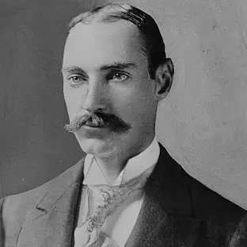
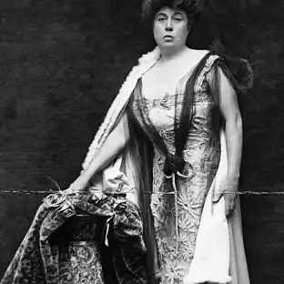

The Titanic Passengers
John Jacob Astor IV
First Class Passenger
John Jacob Astor IV was one of the richest men aboard Titanic, a millionaire businessman, real estate tycoon, and inventor. He was traveling with his 19-year-old wife, Madeleine, whom he had married the previous year, causing a scandal due to their significant age gap. Despite his wealth, Astor remained composed and courteous during the sinking, ensuring his wife found a place on a lifeboat. When he asked to join her, he was denied because of the "women and children first" rule. His final moments remain unknown, but his body was later recovered with $2,500 in cash still in his pockets. His death shocked the world, serving as a tragic reminder that wealth could not buy survival. His wife later gave birth to their son, who never got to meet his father.
Margaret "Molly" Brown (First Class)
First Class Passenger
Margaret Brown, known posthumously as “The Unsinkable Molly Brown,” was a socialite and philanthropist with a larger-than-life personality. Born into a poor Irish-American family, she married a self-made millionaire and used her influence to advocate for women’s rights and social causes. On the Titanic, she enjoyed the luxuries of first class but became an unlikely heroine when disaster struck. After being placed in Lifeboat 6, she urged the crew to return to look for survivors, though they refused. Once rescued by the Carpathia, she took charge in organizing aid for less fortunate survivors, using her wealth and status to raise funds. Her bravery and leadership became legendary, and she remained a champion of human rights until her death in 1932. To this day, she is remembered as one of Titanic’s most inspiring figures.